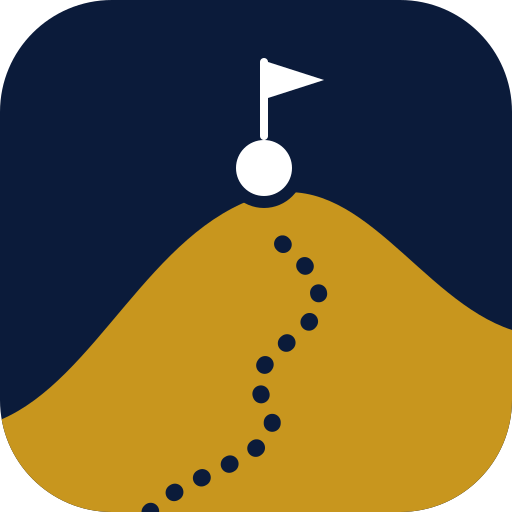
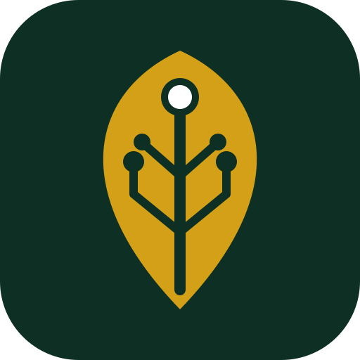
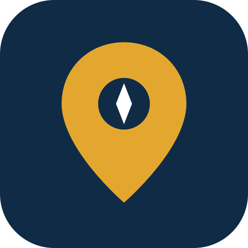
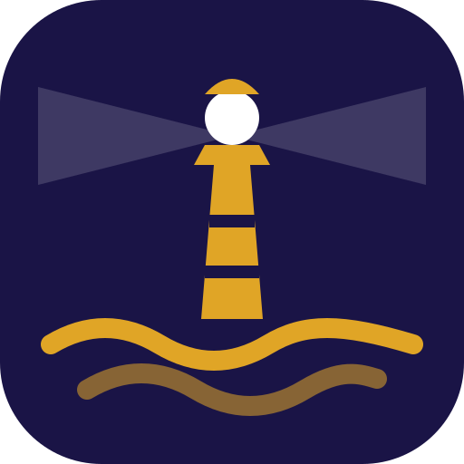

Campus Navigator
Find your way around campus.
Walking directions that follow real footpaths, your timetable and GPA, and a guide for your first year. Choose your university to start.
Your university

UGUniversity of Ghana, Legon
KNUSTKwame Nkrumah University of Science and Technology, Kumasi
UHASUniversity of Health and Allied Sciences, Ho
UCCUniversity of Cape Coast, Cape Coast
In every campus app
- Step-by-step directions with voice, rerouting and live trip sharing.
- Timetable, exams and GPA with reminders before each class.
- A first-year guide for freshers, and campus updates for everyone.
Each university has its own app and accounts; we'll remember your choice on this device. An independent student project, not an official service of these universities.